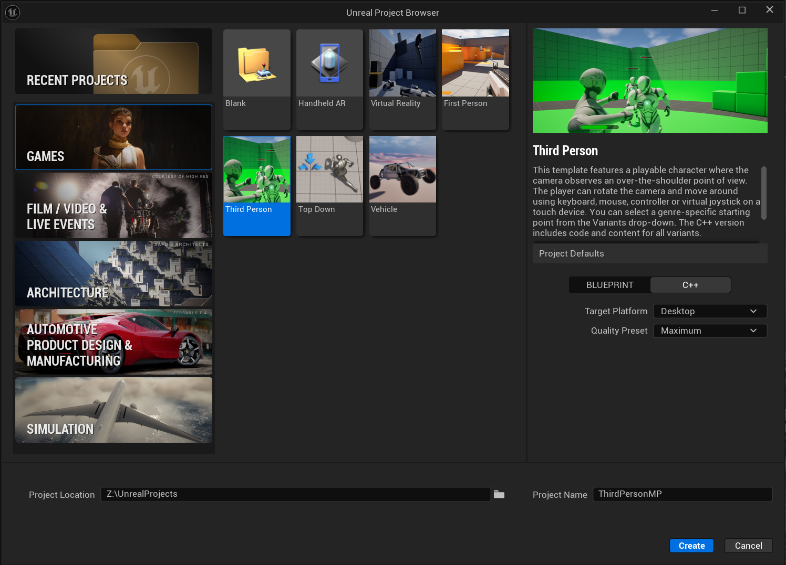
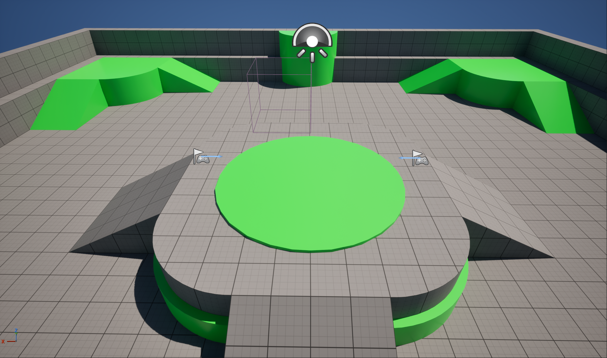
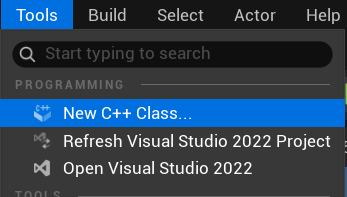
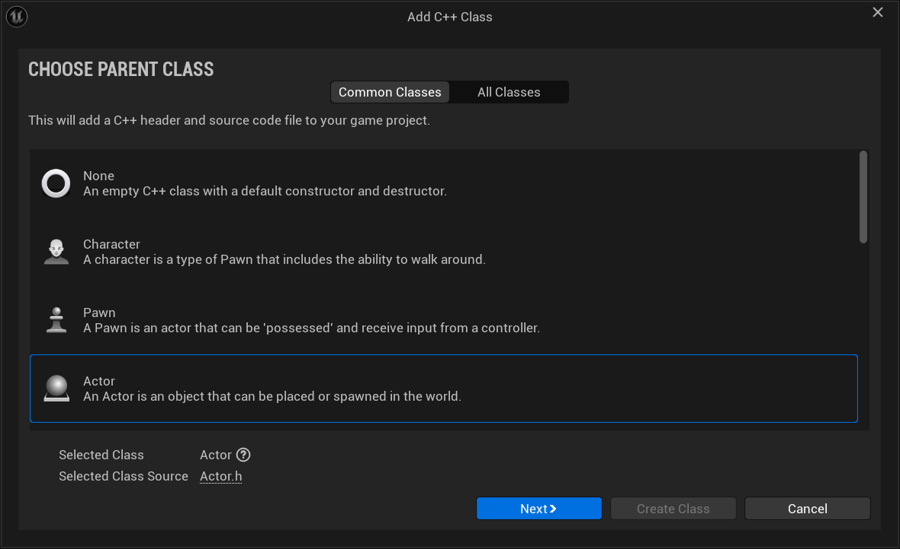
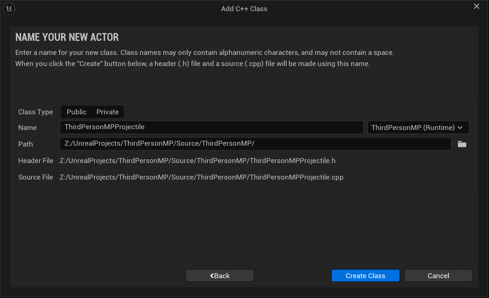
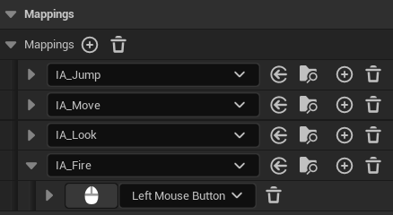
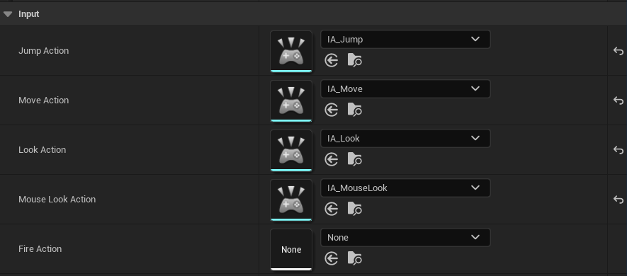
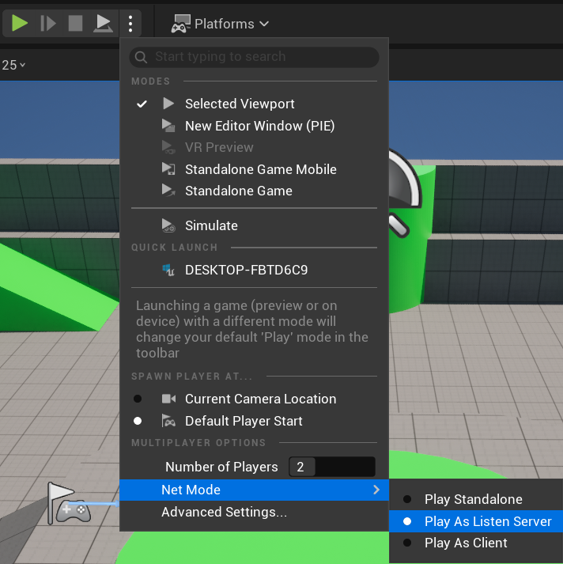
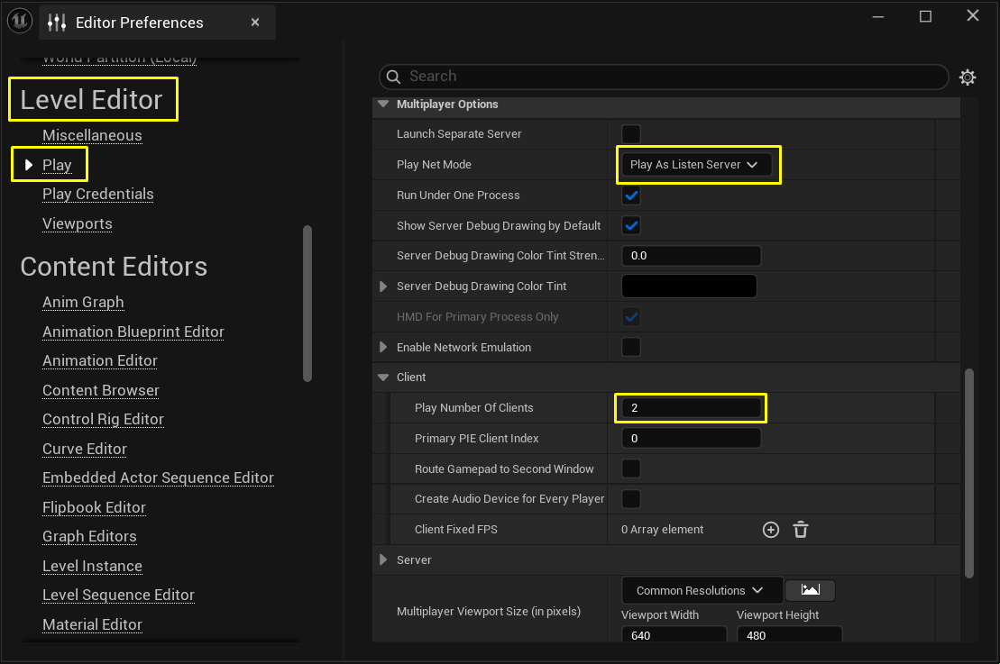

Assignment 4 – Multiplayer Programming Quick Start
Game Engines II
1 Overview
Developing gameplay for a multiplayer game requires you to implement replication in your game’s Actors. You must also design functionality specific to the server (which acts as the host for the game session) or a client (which represents a player connecting to the session).
This assignment will walk you through the process of creating some simple multiplayer gameplay. You will learn the following:
- How to add replication to a base Actor.
- How to take advantage of Movement Components in a network game.
- How to add replication to variables.
- How to use RepNotifies when a variable changes.
- How to use Remote Procedure Calls (RPCs) in C++.
- How to check an Actor’s Network Role to filter calls that are performed within a function.
The result will be a third-person game where players can throw exploding projectiles at one another. The bulk of the work involves creating the projectile and adding a damage response to the Character.
2 Project Setup

Open the Editor and create a New Project with the following settings:
- Is a C++ Project
- Uses the Third-Person Template
- Includes Starter Content
- Targets Desktop
Name your project ThirdPersonMP and click Create. The Unreal Editor will open Lvl\_ThirdPerson automatically.
Ensure that there are two Player Starts present in your map. These will handle spawning your players instead of the manually placed ThirdPersonCharacter that the scene includes by default.

The Pawns and Characters in most templates have replication enabled by default. In this example, ThirdPersonCharacter already has a Character Movement Component that will automatically replicate movement. For more information on how the Character Movement Component handles replication and how to expand on its functionality, you can refer to the Character Movement Component guide.
Cosmetic components like the Character’s Skeletal Mesh and its Animation Blueprint are not replicated. However, variables that are relevant to gameplay and movement, like a Character’s velocity, are replicated. The Animation Blueprint reads these variables as they are updated. In this way, copies of each client’s characters will update their visuals. The process is performed in such a way that they are consistent with accurate updating of gameplay variables. Likewise, the Gameplay Framework automatically handles spawning Characters at Player Starts and assigning Player Controllers to them.
If you start a server with this project and have a client join it, you would already have a functioning multiplayer game. However, players would only be able to move and jump with their avatar. Therefore, you will create some additional multiplayer gameplay.
3 Replicating Player’s Health with RepNotifies
Players need a health value, so that you can cause damage to them during gameplay. That value needs to replicate so all clients have synchronized information about each player’s health. You need to provide feedback to a player when they take damage. This section will demonstrate how it is possible to use a RepNotify to synchronize all essential updates to a variable without relying on RPCs.
3.1 Header Declarations
Open ThirdPersonMPCharacter.h. Add the following properties under protected:
protected:
/** The player's maximum health. This is the highest value of their health can be.
This value is a value of the player's health, which starts at when spawned. */
UPROPERTY(EditDefaultsOnly, Category = "Health")
float MaxHealth;
/** The player's current health. When reduced to 0, they are considered dead. */
UPROPERTY(ReplicatedUsing = OnRep_CurrentHealth)
float CurrentHealth;
/** RepNotify for changes made to current health. */
UFUNCTION()
void OnRep_CurrentHealth();You need to strictly control how the player’s health is changed, therefore these health values have the following constraints:
MaxHealthdoes not replicate and is only editable in defaults. This value is pre-computed for all players and will never change.CurrentHealthreplicates, but is not editable or accessible anywhere in Blueprint.- Both
MaxHealthandCurrentHealthareprotected, which prevents them from being accessed from external C++ classes. They can only be modified withinAThirdPersonMPCharacteror other classes derived from it.
This minimizes the risk of causing unwanted changes to a player’s CurrentHealth or MaxHealth during live gameplay. You will provide other public functions for getting and modifying these values in a later step.
The Replicated specifier enables the copy of an Actor on the server to replicate the value of a variable to all connected clients any time it changes. ReplicatedUsing does the same thing, but enables you to set a RepNotify function. This function will be triggered when a client successfully receives the replicated data. You will use OnRep_CurrentHealth to perform updates to each client based on changes to this variable.
3.2 Required Includes
Open ThirdPersonMPCharacter.cpp. Add the following #include statements:
#include "Net/UnrealNetwork.h"
#include "Engine/Engine.h"These provide required functionality for variable replication, as well as access to the AddOnScreenDebugMessage function in GEngine. You will use it to output messages to the screen.
In ThirdPersonMPCharacter.cpp, add the following code at the bottom of the AThirdPersonMPCharacter constructor :
// Initialize the player's Health
MaxHealth = 100.0f;
CurrentHealth = MaxHealth;These will initialize the player’s health. Any time a new copy of this Character is created, its current health will be set to its maximum health value.
3.3 GetLifetimeReplicatedProps
In ThirdPersonMPCharacter.h, add the following public function declaration just after the AThirdPersonMPCharacter constructor:
/** Property replication */
void GetLifetimeReplicatedProps(TArray<FLifetimeProperty>& OutLifetimeProps) const override;In ThirdPersonMPCharacter.cpp, add the implementation:
//////////////////////////////////////////////////////////////////////////
// Replicated Properties
void AThirdPersonMPCharacter::GetLifetimeReplicatedProps(
TArray<FLifetimeProperty>& OutLifetimeProps) const
{
Super::GetLifetimeReplicatedProps(OutLifetimeProps);
// Replicate current health.
DOREPLIFETIME(AThirdPersonMPCharacter, CurrentHealth);
}You must call the Super version of GetLifetimeReplicatedProps, or inherited properties from parent classes will not replicate, even if the parent class designates them as being replicated.
The GetLifetimeReplicatedProps function is responsible for replicating any properties you designate with the Replicated specifier, and enables you to configure how a property will replicate. Here you are using the most basic implementation for CurrentHealth. If at any time you add more properties that need to be replicated, you must add them to this function as well.
3.4 OnHealthUpdate
In ThirdPersonMPCharacter.h, add under protected:
protected:
/** Response to health being updated. Called on the server immediately after
modification, and on clients in response to a RepNotify. */
void OnHealthUpdate();In ThirdPersonMPCharacter.cpp, add the implementation:
void AThirdPersonMPCharacter::OnHealthUpdate()
{
// Client-specific functionality
if (IsLocallyControlled())
{
FString healthMessage = FString::Printf(
TEXT("You now have %f health remaining."), CurrentHealth);
GEngine->AddOnScreenDebugMessage(-1, 5.f, FColor::Blue, healthMessage);
if (CurrentHealth <= 0)
{
FString deathMessage = FString::Printf(TEXT("You have been killed."));
GEngine->AddOnScreenDebugMessage(-1, 5.f, FColor::Red, deathMessage);
}
}
// Server-specific functionality
if (GetLocalRole() == ROLE_Authority)
{
FString healthMessage = FString::Printf(
TEXT("%s now has %f health remaining."),
*GetFName().ToString(), CurrentHealth);
GEngine->AddOnScreenDebugMessage(-1, 5.f, FColor::Blue, healthMessage);
}
// Functions that occur on all machines.
/*
Any special functionality that should occur as a result of damage or death
should be placed here.
*/
}You will be using this function to perform updates in response to changes to the player’s CurrentHealth. Currently its functionality is limited to onscreen debug messages, but additional functionality could be added — for example, an OnDeath function that is called on all machines to trigger a death animation. Note that OnHealthUpdate is not replicated, and you will need to manually call it on all devices.
3.5 OnRep_CurrentHealth
void AThirdPersonMPCharacter::OnRep_CurrentHealth()
{
OnHealthUpdate();
}Variables replicate any time their value changes rather than constantly replicating, and RepNotifies run any time the client successfully receives a replicated value for a variable. Therefore, any time you change the player’s CurrentHealth on the server, you would expect OnRep_CurrentHealth to run on each connected client. This makes OnRep_CurrentHealth the ideal place to call OnHealthUpdate on client machines.
4 Making the Player Respond to Damage
Now that you have implemented the player’s health, you need to provide a means for modifying the player’s health from outside of this class.
4.1 Public Getters and Setters
In ThirdPersonMPCharacter.h, add under public:
public:
/** Getter for Max Health. */
UFUNCTION(BlueprintPure, Category = "Health")
FORCEINLINE float GetMaxHealth() const { return MaxHealth; }
/** Getter for Current Health. */
UFUNCTION(BlueprintPure, Category = "Health")
FORCEINLINE float GetCurrentHealth() const { return CurrentHealth; }
/** Setter for Current Health. Clamps between 0 and MaxHealth and calls OnHealthUpdate.
Should only be called on the server. */
UFUNCTION(BlueprintCallable, Category = "Health")
void SetCurrentHealth(float healthValue);
/** Event for taking damage. Overridden from APawn. */
UFUNCTION(BlueprintCallable, Category = "Health")
float TakeDamage(float DamageTaken, struct FDamageEvent const& DamageEvent,
AController* EventInstigator, AActor* DamageCauser) override;The GetMaxHealth and GetCurrentHealth functions provide getters that can access the player’s health values from outside of AThirdPersonMPCharacter, both in C++ and in Blueprint. As const functions they provide a safe means of getting these values without allowing them to be modified. You are also declaring functions for setting the player’s health and taking damage.
4.2 SetCurrentHealth Implementation
void AThirdPersonMPCharacter::SetCurrentHealth(float healthValue)
{
if (GetLocalRole() == ROLE_Authority)
{
CurrentHealth = FMath::Clamp(healthValue, 0.f, MaxHealth);
OnHealthUpdate();
}
}SetCurrentHealth provides a controlled means of modifying the player’s CurrentHealth from outside of AThirdPersonMPCharacter. It is not a replicated function, but by checking that the Network Role of the Actor is ROLE_Authority, you restrict this function to execute only if it is called on the hosted game server. It clamps CurrentHealth to values between 0 and the player’s MaxHealth, making it impossible to set CurrentHealth to an invalid value. It also calls OnHealthUpdate to ensure that the server and clients both have parallel calls to this function. This is necessary because the server will not receive the RepNotify.
While “setter” functions like this are not necessary for every variable, they are preferable for sensitive gameplay variables that change frequently during play, especially if they can be modified by many different sources. This is a best practice for single-player and multiplayer games alike, as it makes live changes to these variables more consistent, easier to debug, and easier to extend with new functionality.
4.3 TakeDamage Implementation
float AThirdPersonMPCharacter::TakeDamage(float DamageTaken, struct FDamageEvent const& DamageEvent,
AController* EventInstigator, AActor* DamageCauser)
{
float damageApplied = CurrentHealth - DamageTaken;
SetCurrentHealth(damageApplied);
return damageApplied;
}The built-in functions for applying damage to Actors call the basic TakeDamage function for that Actor. In this case you implement a simple health deduction using SetCurrentHealth.
If you have followed this section so far, the following should now be the flow for applying damage to an Actor:
- An external Actor or function calls
CauseDamageon your Character, which in turn calls itsTakeDamagefunction. TakeDamagecallsSetCurrentHealthto change the player’sCurrentHealthvalue on the server.SetCurrentHealthcallsOnHealthUpdateon the server, causing any functionality that happens in response to changes in the player’s health to execute.CurrentHealthreplicates to all connected clients’ copies of the Character.- When each client receives a new
CurrentHealthvalue from the server, they callOnRep_CurrentHealth. OnRep_CurrentHealthcallsOnHealthUpdate, ensuring that each client responds the same way to the newCurrentHealthvalue.
This implementation has two main advantages. First, it condenses the workflow for adding new functionality around two key functions — SetCurrentHealth and OnHealthUpdate — which makes maintaining and expanding the code easier. Second, since this implementation does not use any Server, Client, or NetMulticast RPCs, it condenses the amount of information being sent across the network, depending only on the replication of CurrentHealth to trigger all essential changes. Since CurrentHealth would need to replicate regardless of what other functions you implement, this is the most efficient possible model for replicating health changes.
5 Creating a Projectile with Replication
Inside the Unreal Editor, create a new C++ class using either the Tools menu or the Content Browser.

In the Choose Parent Class menu, choose Actor as the Parent Class and click Next.

In the Name Your New Actor menu, name your class ThirdPersonMPProjectile and click Create Class.

5.1 Header Properties
Open ThirdPersonMPProjectile.h and add the following under public:
public:
// Sphere component used to test collision.
UPROPERTY(VisibleAnywhere, BlueprintReadOnly, Category = "Components")
class USphereComponent* SphereComponent;
// Static Mesh used to provide a visual representation of the object.
UPROPERTY(VisibleAnywhere, BlueprintReadOnly, Category = "Components")
class UStaticMeshComponent* StaticMesh;
// Movement component for handling projectile movement.
UPROPERTY(VisibleAnywhere, BlueprintReadOnly, Category = "Components")
class UProjectileMovementComponent* ProjectileMovementComponent;
// Particle used when the projectile impacts against another object and explodes.
UPROPERTY(EditAnywhere, Category = "Effects")
class UParticleSystem* ExplosionEffect;
// The damage type and damage that will be done by this projectile.
UPROPERTY(EditAnywhere, BlueprintReadOnly, Category = "Damage")
TSubclassOf<class UDamageType> DamageType;
// The damage dealt by this projectile.
UPROPERTY(EditAnywhere, BlueprintReadOnly, Category = "Damage")
float Damage;You need to precede each of the types in these declarations with the class keyword. This makes each of them a forward declaration of their own classes in addition to being variable declarations, which ensures that their classes will be recognized within the header file. You will be adding #includes for them in the .cpp file during the next step.
The properties you are declaring will provide you with the following:
- A Static Mesh Component to act as a visual representation of the Projectile.
- A Sphere Component to check for collisions.
- A Projectile Movement Component to move the Projectile.
- A Particle System reference that you are going to use to spawn an explosion effect in a later step.
- A Damage Type for use in damage events.
- A
floatvalue for Damage to denote how much health should be subtracted when a Character is hit by this Projectile.
However, none of these are defined yet.
Like the Character Movement Component, the Projectile Movement Component automatically handles replication when it moves the Actor that it belongs to, provided that the Actor has bReplicates set to true.
5.2 CPP Includes
Open ThirdPersonMPProjectile.cpp. Add the following includes below #include "ThirdPersonMPProjectile.h":
#include "Components/SphereComponent.h"
#include "Components/StaticMeshComponent.h"
#include "GameFramework/ProjectileMovementComponent.h"
#include "GameFramework/DamageType.h"
#include "Particles/ParticleSystem.h"
#include "Kismet/GameplayStatics.h"
#include "UObject/ConstructorHelpers.h"You will need to use each of these throughout this walkthrough. The first four are the components you are using, while GameplayStatics.h will give you access to basic gameplay functions, and ConstructorHelpers.h will give you access to some useful constructor functions for setting up our components.
5.3 Constructor Setup
Enable replication at the top of the constructor body:
bReplicates = true;The bReplicates variable tells the game that this Actor should replicate. By default, the Actor would only exist locally on the machine that spawns it. With bReplicates set to true, as long as an authoritative copy of the Actor exists on the server, it will try to replicate the Actor to all connected clients.
Set up the SphereComponent (root + collision):
SphereComponent = CreateDefaultSubobject<USphereComponent>(TEXT("RootComponent"));
SphereComponent->InitSphereRadius(37.5f);
SphereComponent->SetCollisionProfileName(TEXT("BlockAllDynamic"));
RootComponent = SphereComponent;This will define the SphereComponent when the object is constructed, giving your Projectile collision.
Set up the StaticMeshComponent:
static ConstructorHelpers::FObjectFinder<UStaticMesh>
DefaultMesh(TEXT("/Game/StarterContent/Shapes/Shape_Sphere.Shape_Sphere"));
StaticMesh = CreateDefaultSubobject<UStaticMeshComponent>(TEXT("Mesh"));
StaticMesh->SetupAttachment(RootComponent);
if (DefaultMesh.Succeeded())
{
StaticMesh->SetStaticMesh(DefaultMesh.Object);
StaticMesh->SetRelativeLocation(FVector(0.0f, 0.0f, -37.5f));
StaticMesh->SetRelativeScale3D(FVector(0.75f, 0.75f, 0.75f));
}This will define the StaticMeshComponent that you are using as a visual representation. It will automatically try to find the Shape_Sphere mesh inside of StarterContent and fill it in. The sphere will also be scaled to align with your SphereComponent in size.
Set up the ExplosionEffect:
static ConstructorHelpers::FObjectFinder<UParticleSystem>
DefaultExplosionEffect(TEXT("/Game/StarterContent/Particles/P_Explosion.P_Explosion"));
if (DefaultExplosionEffect.Succeeded())
{
ExplosionEffect = DefaultExplosionEffect.Object;
}This will set the asset reference for your ExplosionEffect to be the P_Explosion asset inside of StarterContent.
Set up the ProjectileMovementComponent:
ProjectileMovementComponent =
CreateDefaultSubobject<UProjectileMovementComponent>(TEXT("ProjectileMovement"));
ProjectileMovementComponent->SetUpdatedComponent(SphereComponent);
ProjectileMovementComponent->InitialSpeed = 1500.0f;
ProjectileMovementComponent->MaxSpeed = 1500.0f;
ProjectileMovementComponent->bRotationFollowsVelocity = true;
ProjectileMovementComponent->ProjectileGravityScale = 0.0f;This will define the Projectile Movement Component for your Projectile. This Component is replicated, and any movement that it performs on the server will be reproduced on clients.
Initialize damage values:
DamageType = UDamageType::StaticClass();
Damage = 10.0f;These will initialize both the amount of Damage that the Projectile will deal to an Actor as well as the Damage Type that will be used in the damage event. Here you are initializing with the base UDamageType, as you have not yet defined any new Damage Types.
6 Making the Projectile Cause Damage
If you have been following along thus far, it is possible for you to spawn the projectile on the server and it will appear and move on all clients. However, if it hits a wall or a blocking object, it will stop. You need it to apply damage to players, and you need to show an explosion effect to all connected Clients in the session.
6.1 Destroyed (Explosion Effect)
In ThirdPersonMPProjectile.h, add under protected:
protected:
virtual void Destroyed() override;In ThirdPersonMPProjectile.cpp:
void AThirdPersonMPProjectile::Destroyed()
{
FVector spawnLocation = GetActorLocation();
UGameplayStatics::SpawnEmitterAtLocation(this, ExplosionEffect, spawnLocation,
FRotator::ZeroRotator, true, EPSCPoolMethod::AutoRelease);
}The Destroyed function is called any time an Actor is destroyed. Particle emitters themselves do not normally replicate, but since Actor destruction does replicate, you destroy this projectile on the server. This function will be called on each connected client when they destroy their own copies of it. As a result, all players will see the explosion effect when the projectile is destroyed.
6.2 OnProjectileImpact
In ThirdPersonMPProjectile.h, add under protected:
UFUNCTION(Category = "Projectile")
void OnProjectileImpact(UPrimitiveComponent* HitComponent, AActor* OtherActor,
UPrimitiveComponent* OtherComp, FVector NormalImpulse, const FHitResult& Hit);In ThirdPersonMPProjectile.cpp:
void AThirdPersonMPProjectile::OnProjectileImpact(UPrimitiveComponent* HitComponent,
AActor* OtherActor, UPrimitiveComponent* OtherComp,
FVector NormalImpulse, const FHitResult& Hit)
{
if (OtherActor)
{
UGameplayStatics::ApplyPointDamage(OtherActor, Damage, NormalImpulse, Hit,
GetInstigator()->Controller, this, DamageType);
}
Destroy();
}This is the function that you are going to call when the Projectile impacts with an object. If the object it impacts with is a valid Actor, it will call the ApplyPointDamage function to damage it at the point where the collision takes place. Meanwhile, any collision regardless of the impacted surface will destroy this Actor, causing the explosion effect to appear.
6.3 Registering the Hit Event
In the AThirdPersonMPProjectile constructor, add the following code below the line that reads RootComponent = SphereComponent;:
// Registering the Projectile Impact function on a Hit event.
if (GetLocalRole() == ROLE_Authority)
{
SphereComponent->OnComponentHit.AddDynamic(this,
&AThirdPersonMPProjectile::OnProjectileImpact);
}This will register the OnProjectileImpact function with the OnComponentHit event on the Sphere Component, which acts as the projectile’s primary collision component. To make especially sure that only the server runs this gameplay logic, you check for GetLocalRole() == ROLE_Authority before registering OnProjectileImpact.
7 Shooting the Projectile
7.1 Include the Projectile Class
In ThirdPersonMPCharacter.cpp, below #include "Engine/Engine.h":
#include "ThirdPersonMPProjectile.h"This will enable your Character class to recognize the projectile’s type and spawn it.
7.2 Header Declarations
In ThirdPersonMPCharacter.h, add under protected:
protected:
UPROPERTY(EditDefaultsOnly, Category = "Gameplay|Projectile")
TSubclassOf<class AThirdPersonMPProjectile> ProjectileClass;
/** Delay between shots in seconds. Used to control fire rate for your test
projectile, but also to prevent an overflow of server functions from binding
SpawnProjectile directly to input. */
UPROPERTY(EditDefaultsOnly, Category = "Gameplay")
float FireRate;
/** If true, you are in the process of firing projectiles. */
bool bIsFiringWeapon;
/** Function for beginning weapon fire. */
UFUNCTION(BlueprintCallable, Category = "Gameplay")
void StartFire();
/** Function for ending weapon fire. */
UFUNCTION(BlueprintCallable, Category = "Gameplay")
void StopFire();
/** Server function for spawning projectiles. */
UFUNCTION(Server, Reliable)
void HandleFire();
/** A timer handle used for providing the fire rate delay in-between spawns. */
FTimerHandle FiringTimer;
/** Timer handle for providing the fire rate delay. */
FTimerHandle FiringTimer;These are the variables and functions you will be using to fire your projectiles. HandleFire is the only RPC you will implement in this assignment, and it will be responsible for spawning projectiles on the server. Because it has the Server specifier, any attempt to call it on a client will result in the call being directed over the network to the authoritative Character on the server instead.
Because HandleFire has the Reliable specifier as well, it is placed into a queue for reliable RPCs whenever it gets called, and it is removed from the queue when the server successfully receives it. This guarantees that the server will definitely receive this function call. However, the queue for reliable RPCs can overflow if too many RPCs are placed into it at once without removing them, and if it does then it will force the user to disconnect. Therefore, you need to be cautious in how often you allow players to call this function.
In ThirdPersonMPCharacter.cpp, add the following code to the bottom of the AThirdPersonMPCharacter constructor:
// Initialize projectile class
ProjectileClass = AThirdPersonMPProjectile::StaticClass();
// Initialize fire rate
FireRate = 0.25f;
bIsFiringWeapon = false;These will initialize the variables necessary to handle firing the projectile.
7.3 Fire Implementations
In ThirdPersonMPCharacter.cpp, add the following implementations:
void AThirdPersonMPCharacter::StartFire()
{
if (!bIsFiringWeapon)
{
bIsFiringWeapon = true;
UWorld* World = GetWorld();
World->GetTimerManager().SetTimer(FiringTimer, this,
&AThirdPersonMPCharacter::StopFire, FireRate, false);
HandleFire();
}
}
void AThirdPersonMPCharacter::StopFire()
{
bIsFiringWeapon = false;
}
void AThirdPersonMPCharacter::HandleFire_Implementation()
{
FVector spawnLocation = GetActorLocation()
+ (GetActorRotation().Vector() * 100.0f)
+ (GetActorUpVector() * 50.0f);
FRotator spawnRotation = GetActorRotation();
FActorSpawnParameters spawnParameters;
spawnParameters.Instigator = GetInstigator();
spawnParameters.Owner = this;
AThirdPersonMPProjectile* spawnedProjectile = GetWorld()->SpawnActor<AThirdPersonMPProjectile>(
spawnLocation, spawnRotation, spawnParameters);
}StartFire is the function that players call on their local machine in order to initiate the firing process, and it restricts how often the user is allowed to call HandleFire based on the following criteria:
- The user cannot fire a projectile if they are already in the middle of firing. This is designated with
bIsFiringWeapon, which is set totruewhenStartFireis called. bIsFiringWeaponis only set tofalsewhenStopFireis called.StopFireis called when a timer with a length ofFireRatefinishes.
This means that when the user fires a projectile, they must wait a number of seconds equal to FireRate before they can fire again. This will function consistently regardless of what kind of input StartFire is bound to. For example, if the user binds the “Fire” command to a scroll wheel or similarly inappropriate input, or if they mash the button repeatedly, this function will still execute at an acceptable interval of time and not overflow the user’s queue for reliable functions with calls to HandleFire.
Because HandleFire is a Server RPC, its implementation in the .cpp file must have the suffix _Implementation added to the function name. This implementation uses the Character’s Control Rotation to get the direction that the camera is facing, then spawns the projectile facing in that direction, enabling the player to aim. The projectile’s Projectile Movement Component then handles moving it in that direction.
7.4 Input Action Setup
Go back to the Unreal Editor and go to the folder ThirdPerson → Input → Actions. Right-click, select Input and then Input Action to create a new Input Action. Name this Input Action IA_Fire. Go back to the Input folder and open IMC_Default. Select IA_Fire as the new mapping and set the Left Mouse Button for the Mouse Mapping.

Now that we have the new Input Action set up and configured, go back to Visual Studio and open ThirdPersonMPCharacter.h. Add a new input mapping for collecting the pickups:
/** Fire Input Action */
UPROPERTY(EditAnywhere, BlueprintReadOnly, Category = Input,
meta = (AllowPrivateAccess = "true"))
UInputAction* FireAction;Now, open ThirdPersonMPCharacter.cpp. The Character in the SetupPlayerInputComponent function already has several inputs set up. We are going to use BindAction. Actions are discrete things like jumping, whereas BindAxis is for turning or anything where you are going along a spectrum rather than a discrete mouse button press. Call this FireAction:
// Firing
EnhancedInputComponent->BindAction(FireAction, ETriggerEvent::Triggered, this,
&AThirdPersonMPCharacter::StartFire);When it is pressed, this calls a function inside the Character class. It knows to look for some action event called FireAction. Whenever that is called from whichever key we set up in the editor, it calls StartFire on our Character class. Save this, switch back to the editor and compile.
Next, we will set up our key press. Open BP_ThirdPersonCharacter and, on the Input section, set IA_Fire as the Fire Action.

This binds StartFire to the Fire Input Action you created, enabling the user to activate it.
8 Test Your Game
Open your Project in the Editor. Click the Edit drop-down menu and open Editor Preferences.

Navigate to the Level Editor section and click the Play menu. Find the Multiplayer Options and change the Play Net Mode to Play As Listen Server. Also, set Play Number Of Clients to 2.

Press the Play button. The main Play in Editor (PIE) window will start a Multiplayer Session as the Server, and a second PIE window will open and connect as the Client.
9 Final Result
Both players in your game should be able to see each other moving, and they should also be able to shoot the custom projectile at each other. When one player is hit by the custom projectile, the explosion particle should appear for both players, and the player taking the hit will receive a “hit” message telling them how much damage they took and their current health, while all other players in the session should not see anything. If a player’s health is reduced to 0, they should see a message informing them that they have been killed.
Now that you have completed this assignment, you should have a grasp on the basics of building multiplayer functionality in C++, including an overview of variable and component replication, how to work with Network Roles, and when it is appropriate to use RPCs. With this information you should be able to build your own multiplayer games within Unreal’s Server-Client model.
10 Exercises
To continue expanding your skills with Network Multiplayer programming, try to do the following:
- Expand the Projectile’s
OnHitfunctionality to create additional effects when the Projectile hits a target, like creating a Sphere Trace to simulate an explosion radius. - Extend
ThirdPersonMPProjectileand experiment with itsProjectileMovementComponent to create new variations with different behaviors. - Expand the
TakeDamagefunction inThirdPersonMPCharacterto kill the player’s pawn and make them respawn. - Add a HUD to the local
PlayerControllerand have it display replicated information or respond to Client functions. - Use
DamageTypesto create personalized messages when a player is killed. - Explore the use of Game Mode, Player State, and Game State to create a complete set of rules for moderating a match with player stats and a scoreboard.